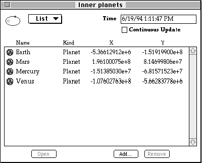
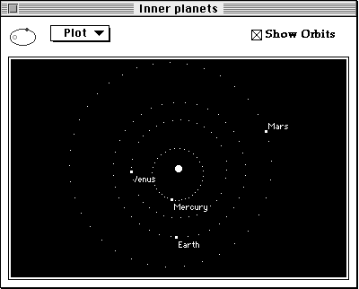
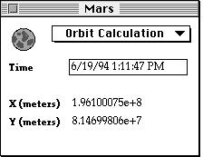
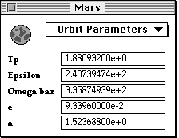
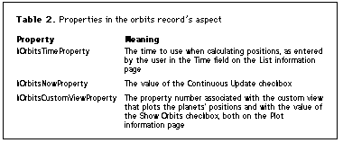

PowerTalk provides AOCE catalogs to store and edit collections of information. The
Catalogs Extension to the Finder lets you use AOCE templates to extend the types of
information stored and the means of editing it, which makes the catalogs open-ended
rather than limited to the information types provided by Apple with the PowerTalk
software. This article explores several advanced features of AOCE templates, showing
how new types of entries can be added that store information about planets and
calculate their current locations and orbits.
The AOCE Catalogs Extension (CE) -- an extension to the Finder and one of the
PowerTalk components -- was originally conceived as an open-ended means of
providing addresses for PowerTalk mail and messaging; however, it goes well beyond
that original goal. The CE allows third-party developers to extend the Finder in a
variety of ways, including providing new catalog entry types, new views on the
contents of entries, new means of editing those contents, runtime calculation of
information to be displayed, and new actions to perform in the case of drag and drop
and double-click operations. AOCE templates, which serve as the extension mechanism,
provide resources and code that define the format, appearance, and functionality of
catalog entries.
Because this article explores advanced features of the AOCE template mechanism, we
assume some familiarity with AOCE catalogs and a basic understanding of AOCE
templates and the terms used to describe them. The article "Getting the Most out of
AOCE Catalog Records" in this issue gives an overview of AOCE catalogs and templates.
For in-depth information, the definitive reference is Inside Macintosh: AOCE
Application Interfaces.
In this article, we demonstrate how the template mechanism can be extended to plot
the orbits of the planets. For those of you who aren't interested in celestial mechanics
and could care less about the mathematics involved in calculating the position of a
celestial body, don't worry -- the article focuses on templates; you can skip the
details on celestial mechanics without limiting your understanding. But if you are
interested, see "Algorithms for Calculating Planetary Positions."
Here we discuss the parameters and algorithms used for calculating the
positions of the planets. Orbits are three dimensional, but for our purpose -
plotting the orbit from an overhead perspective - we need only two dimensions.
Extending the templates to three dimensions is an excellent exercice for the
reader.
The parameters needed for calculating a planed's orbit are as follows:
| Symbol | Meaning |
| Period (tropical years) | |
| Longitude at epoch (degrees) | |
| Longitude at the perihelion (degrees) | |
| e | Eccentricity of the orbit |
| a | Semi-major axis of the orbit |
These parameters are for the epoch 1990 January 0.0. We use them to calculate
a series of intermediate values, leading up to calculating the x and y
coordinates used to plot the planet's position for the specified date and time.
Table 1 below shows the actual values of the orbital parameters for each of
the planets.
Table 1. Orbital parameter values
| Planet | e | a | |||
|---|---|---|---|---|---|
| Mercury | 0.240852 | 60.750646 | 77.299833 | 0.205633 | 0.387099 |
| Venus | 0.615211 | 88.455855 | 131.430236 | 0.003778 | 0.723332 |
| Earth | 1.00004 | 99.403308 | 102.768413 | 0.016713 | 1.00000 |
| Mars | 1.880932 | 240.739474 | 335.874939 | 0.093396 | 1.523688 |
| Jupiter | 11.863075 | 90.638185 | 14.170747 | 0.048482 | 5.202561 |
| Saturn | 29.471362 | 287.690033 | 92.861407 | 0.055581 | 9.554747 |
| Uranus | 84.039492 | 271.063148 | 172.884833 | 0.046321 | 19.21814 |
| Neptune | 164.79246 | 282.349556 | 48.009758 | 0.009003 | 30.109570 |
| Pluto | 246.77027 | 221.4127 | 224.133 | 0.24624 | 39.3414 |
To begin the calculations, we need to know how many days (d) it has been since
the start of the epoch. The epoch actually starts on midnight between December
30 and 31, 1989. This may seem confusing, but it simplifies some of the
calculations. Thus, 6 A.M., January 5, 1990, is six days and six hours since
the start of the epoch, or 6.25 days.
Next, we need to find the true anomaly (v), which is the angle the planet makes
with the line between the sun and the perihelion (the point nearest the sun in
the planet's orbit). To find it, we first calculate the mean anomaly (m), which
would be the true anomaly if the planet's orbit where circular.
The eliocentric longitude (l) is
Now that we know the angle of the planet, all we need is the distance given by
the radius vector (r).
From here it's simple trigonometry to get the x and y coordinates:
You'll see these calculations later in code.
Warning: While the above calculations are perfectly sufficient to tell you which
window to look out of to see Mars, they may lack something if your object is to
actually reach Mars. For this reason, readers with their own spacecraft should
not count on these formulas, or the resulting templates, for purposes of
celestial navigation.
We begin by developing a set of templates that plot the positions and orbits of the
planets at a specified time. A sublist on one of the record information pages lists the
planets and their positions. We also develop templates to display information pages for
each planet; these pages enable the user to enter the information needed to calculate a
planet's orbit. The calculations and plotting are performed by code resources in the
templates. Using the techniques described in the article, you could add other types of
celestial bodies (such as comets, moons, and alien spacecraft) that would be defined by
a different set of parameters and have a different algorithm for calculating position
and orbit.
Although the templates are quite straightforward in general, the article focuses on
the code resources that implement three advanced features of the template mechanism:
The templates we create define a record type of "hrc Orbits" to hold the list of planets
we want to display. The record contains an attribute type "hrc Planet" with one
attribute value per planet and an attribute value tag of 'plnt'. There's also a
single-valued attribute of type "hrc Orbits info," which holds information pertinent to
the orbits record.
Using an attribute value tag allows for future expansion to new types of objects --
spacecraft, for instance. In the example, the aspect template for the attribute type
"hrc Planet" is used only for attribute values with the attribute value tag 'plnt'. To add
a new type of object, which may require different orbital parameters and a different
algorithm to calculate the orbits, you would use a different tag. For example, an
attribute value that describes a spacecraft might have an attribute value tag of 'crft'.
We need to define the following templates:
These templates are included on this issue's CD. There's nothing remarkable about
most of them. This article discusses only those portions of the templates that are more
interesting and unusual.
ORBITS RECORD INFORMATION PAGE TEMPLATES
We use two information pages to display the information stored in an orbits record
(Figure 1). The List information page contains a sublist of planets (attribute type
"hrc Planet"), allowing the user to create new planets and drag existing ones into and
out of the list. Besides an icon, name, and kind, the sublist on the List page displays x
and y coordinates for each planet. This is the location at the time given in the field at
the top of the page. The user can edit the time to see past and future positions. The
Continuous Update checkbox, when checked, causes the Time field to be constantly
updated to the current time. The state of this checkbox is kept in the "hrc Orbits info"
attribute of the orbits record.

List

Plot
Figure 1. Information pages for the orbits record
The Plot information page contains a plot of the position of each planet in the sublist on
the List information page. When the Show Orbits checkbox is checked, the plot shows
not only the position of each planet, but also the future track -- the orbit -- of the
planet. Orbital calculations take a lot of time, especially on slower systems, so the
user can choose whether or not to display this information.
Listing 1 shows resource definitions for the Plot information page template. Note that
kOrbitsCustomViewProperty is used for the property number for both the Show Orbits
checkbox and the custom view that plots the positions. Normally two views don't share
the same property. Using the same one here causes an automatic redraw of the custom
view when the checkbox changes. This is simpler than using the code resource to
intercept the property-dirtied call resulting from the checkbox change and using a
dirty-property callback to cause the custom view to be redrawn. (Whenever a
property is changed, a kDETcmdPropertyDirtied call is made to the code resource.)
The bulk of the work for the custom view occurs in the code resource, as described
later in the section "Drawing in a Custom View."
Listing 1. Plot information page template
resource 'deti' (kOrbitsPlotPage, purgeable) {
2000, kDETNoSublistRect, noSelectFirstText,
{
kDETNoProperty, kDETNoProperty, kOrbitsPlotPage;
},
{}
};
resource 'rstr' (kOrbitsPlotPage+kDETTemplateName, purgeable) {
"hrc Orbits plot page"
};
resource 'rstr' (kOrbitsPlotPage+kDETRecordType, purgeable) {
kOrbitsRecordType
};
resource 'rstr' (kOrbitsPlotPage+kDETInfoPageName, purgeable) {
"Plot"
};
resource 'rstr' (kOrbitsPlotPage+kDETInfoPageMainViewAspect,
purgeable) {
"hrc Orbits main aspect"
};
resource 'detv' (kOrbitsPlotPage, purgeable){
{
kDETSubpageIconRect, kDETNoFlags, kDETAspectMainBitmap,
Bitmap {kDETLargeIcon};
{12, kOrbitsPageWidth-120, 28, kOrbitsPageWidth-8},
kDETNoFlags, kOrbitsCustomViewProperty,
CheckBox {kPalatino, 12, kDETLeft, kDETBold,
"Show Orbits", kOrbitsCustomViewProperty};
{44, 8, kOrbitsPageHeight-8, kOrbitsPageWidth-8}, kDETNoFlags,
kDETNoProperty, Box {kDETUnused};
{47, 11, kOrbitsPageHeight-11, kOrbitsPageWidth-11}, kDETNoFlags,
kOrbitsCustomViewProperty, Custom {kDETUnused};
}
};
PLANET INFORMATION PAGE TEMPLATES
When the user double-clicks a planet in the sublist, a window opens with two more
information pages (Figure 2). The Orbit Calculation information page displays the
position of the planet at a user-specified time. The Orbit Parameters information page
displays, and lets the user enter, the values for the orbital parameters (shown earlier
in Table 1). These two pages could have been combined, but most users aren't
interested in seeing the orbital parameter values once they've been entered. They just
clutter up the interesting information -- the planet's location at a given time.

Orbit Calculation

Orbit Parameters
Figure 2. Information pages for a planet
ORBITS RECORD ASPECT TEMPLATE
We define one aspect template for the orbits record (record type "hrc Orbits") -- a
main aspect that also serves as the main view aspect for the orbits record information
pages. The aspect for the orbits record contains the properties listed in Table 2.

The kOrbitsNowProperty property and the entries in the sublist are stored in the
record, as specified by the 'dett' lookup table resource (shown below). You'll find the
full source code for the orbits record aspect template on this issue's CD.
resource 'dett' (kOrbitsMainAspect+kDETAspectLookup, purgeable) {
{
{kOrbitsAttributeType}, typeBinary,
useForInput, useForOutput, notInSublist, isNotAlias,
isNotRecordRef,
{
'long', kOrbitsNowProperty, 0;
};
{kPlanetAttributeType}, 'plnt',
notForInput, notForOutput, useInSublist, isNotAlias,
isNotRecordRef,
{};
}
};
ASPECT TEMPLATE FOR ATTRIBUTE TYPE "HRC PLANET"
The aspect template for attribute type "hrc Planet" is also a main aspect template. The
properties defined by this aspect are shown in Table 3. The orbital parameters, as
well as the name of the attribute value (for example, "Mercury" or "Venus"), are
stored in the attribute value, so they're included in the 'dett' resource:
#define kExtendedPropertyType 2
#define kExtendedPropertyTypeSize 10
...
resource 'dett' (kPlanetMainAspect+kDETAspectLookup, purgeable) {
{
{kPlanetAttributeType}, 'plnt',
useForInput, useForOutput, notInSublist, isNotAlias,
isNotRecordRef,
{
'rstr', kDETAspectName, 0;
'btyp', kDETNoProperty, kExtendedPropertyType;
'blok', kTpProperty, kExtendedPropertyTypeSize;
'blok', kEpsilonProperty, kExtendedPropertyTypeSize;
'blok', kOmegaBarProperty, kExtendedPropertyTypeSize;
'blok', keProperty, kExtendedPropertyTypeSize;
'blok', kaProperty, kExtendedPropertyTypeSize;
};
}
};
Table 3. Properties in the "hrc Planet" attribute type's aspect
| Property | Meaning |
|---|---|
| kTimeProperty | The time, as entered by the user in the Time field |
| kXProperty | The x coordinate at that time |
| kYProperty | The y coordinate at that time |
| kTpProperty | |
| kEpsilonProperty | |
| kOmegaBarProperty | |
| keProperty | The e orbital parameter |
| kaProperty | The a orbital parameter |
Each of the properties in the 'dett' resource except kDETAspectName has a
template-defined custom property type of 2 (kExtendedPropertyType) and is 10
(kExtendedPropertyTypeSize) bytes in size. The actual format is that of the standard
SANE floating-point extended type. The 'btyp' element specifies that all subsequent
'blok' elements should produce properties of the type given (kExtendedPropertyType).
The 'blok' elements that follow specify a fixed-size block, kExtendedPropertyTypeSize
bytes in size. The next section describes how these property types get used.
As with the main aspect template for the orbits, the rest of this template is quite
simple and is included on the CD.
The templates we're defining use two property types that aren't supported directly by
the CE: SANE floating-point extended, for orbital parameters and positions, and
date/time, for specifying the time for which the positions should be calculated. In
addition to using these property types for internal calculations, we want to display
them and let the user edit them. To do this, we display the items in text fields and
supply a code resource that translates between the internal representation of the
custom property types and text (RStrings). The code resource implements
convertToRString and convertFromRString when called by the CE. The part of the
Planet routine that figures out when to call the conversion functions is as follows:
#define kTimePropertyType 1
#define kTimePropertyTypeSize 8
pascal OSErr Planet(DETCallBlockPtr callBlockPtr)
{
if (callBlockPtr->protoCall.target.selector == kDETSelf)
switch (callBlockPtr->protoCall.reqFunction) {
...
case kDETcmdConvertToRString:
return convertToRString(callBlockPtr);
case kDETcmdConvertFromRString:
return convertFromRString(callBlockPtr);
...
}
return kDETDidNotHandle;
}
In each case, the conversion function in the code resource first gets the type of the
property being converted -- either kTimePropertyType or kExtendedPropertyType
-- and then performs the conversion appropriate to that property type. The code in
Listing 2 is for the convertToRString case; code for convertFromRString performs the
opposite conversion, taking an RString and turning it into a custom property type.
Listing 2. Converting custom property types to a text string
OSErr convertToRString(DETCallBlockPtr callBlockPtr)
{
DETConvertToRStringBlock* ctrs;
DETGetPropertyTypeBlock gpt;
ctrs = &(callBlockPtr->convertToRString);
// Get the type of the property being converted.
gpt.reqFunction = kDETcmdGetPropertyType;
gpt.target = ctrs->target;
gpt.property = ctrs->property;
if (CallBackDET(callBlockPtr,
(DETCallBackBlock*) &gpt) == noErr) {
char s[256];
RStringHandle h;
// Convert time property types.
if (gpt.propertyType == kTimePropertyType) {
LongDateTime ldt;
char tStr[256];
// Get the current value.
ldt = GetTimeProperty(callBlockPtr, ctrs->property);
// Convert it to a string.
iuldatestring(&ldt, shortDate, s, nil);
tStr[0] = ' '; tStr[1] = 0;
strcat(s, tStr);
iultimestring(&ldt, true, tStr, nil);
strcat(s, tStr);
}
// Convert floating-point extended property types.
else if (gpt.propertyType == kExtendedPropertyType) {
extended n;
decform df;
decimal d;
// Get the current value.
n = GetExtendedProperty(callBlockPtr, ctrs->property);
// Convert it to a string.
df.style = FLOATDECIMAL;
df.digits = 9;
num2dec(&df, n, &d);
dec2str(&df, &d, &s);
}
// If we don't know the type, don't convert it.
else return kDETDidNotHandle;
// Return the string as an RString handle.
h = (RStringHandle) NewHandle(strlen(s) +
sizeof(ProtoRString));
if (h) {
HLock((Handle) h);
OCECToRString(s, smRoman, *h, strlen(s));
HUnlock((Handle) h);
ctrs->theValue = h;
return noErr;
}
else return MemError();
}
return kDETDidNotHandle;
}
Two utility functions retrieve properties of the new types -- getTimeProperty and
getExtendedProperty. Listing 3 shows getExtendedProperty (getTimeProperty is
virtually identical).
Listing 3. getExtendedProperty
extended getExtendedProperty(DETCallBlockPtr callBlockPtr,
short property)
{
DETGetPropertyBinaryBlock gpb;
extended n;
gpb.reqFunction = kDETcmdGetPropertyBinary;
gpb.target = callBlockPtr->protoCall.target;
gpb.property = property;
if (CallBackDET(callBlockPtr, (DETCallBackBlock*) &gpb) != noErr)
return 0.0;
BlockMove(*gpb.propertyValue, (char*) &n, sizeof(n));
DisposeHandle(gpb.propertyValue);
return n;
}
The code shown in this section belongs to the aspect template for attribute type "hrc
Planet." Similar code is used for the orbits record aspect template, but that template
never needs to convert extended types -- they're always converted by the "hrc Planet"
attribute type template -- so only the code for converting times is included.
The CE makes all the decisions about when to perform the conversions. When it needs
to display a property in a text field, it calls the code resource to convert the property
to text. When the user finishes editing a property and closes the field (by tabbing to
the next field, pressing Enter, switching pages, or closing the window), the CE calls
the code resource to convert the property from text to the internal type.
The CE knows what type a property is because the template tells it. In the case of
properties stored in an attribute value, the 'dett' resource includes the type
information, as discussed earlier in the section on the aspect template for attribute
type "hrc Planet."
In the case of temporary properties not stored in an attribute value, for which there is
no 'dett' entry, the code resource sets the type, generally while setting the property.
For example, in the aspect template for attribute type "hrc Planet" the code resource
initializes the Time field to the current time as a part of the instanceInit routine,
which is invoked when the code resource is called with the kDETcmdInstanceInit
routine selector (Listing 4).
Listing 4. Initializing the Time field in instanceInit
OSErr instanceInit(DETCallBlockPtr callBlockPtr)
{
DETSetPropertyTypeBlock spt;
DETSetPropertyBinaryBlock spb;
unsigned long l;
LongDateCvt ldt;
// Set the time property type.
spt.reqFunction = kDETcmdSetPropertyType;
spt.target = callBlockPtr->protoCall.target;
spt.property = kTimeProperty;
spt.newType = kTimePropertyType;
CallBackDET(callBlockPtr, (DETCallBackBlock*) &spt);
// Set the time property to the current time.
GetDateTime(&l);
ldt.hl.lHigh = 0; ldt.hl.lLow = l;
spb.reqFunction = kDETcmdSetPropertyBinary;
spb.target = callBlockPtr->protoCall.target;
spb.property = kTimeProperty;
spb.newValue = (Ptr) &ldt;
spb.newValueSize = sizeof(ldt);
if (CallBackDET(callBlockPtr, (DETCallBackBlock*) &spb) ==
noErr) {
// Dirty the time property.
DETDirtyPropertyBlock dp;
dp.reqFunction = kDETcmdDirtyProperty;
dp.target = callBlockPtr->protoCall.target;
dp.property = kTimeProperty;
CallBackDET(callBlockPtr, (DETCallBackBlock*) &dp);
}
}
The aspect template for attribute type "hrc Planet" calculates the position of the planet
at a specified time. It takes the time from kTimeProperty and puts the resulting
position in kXProperty and kYProperty. This calculation, which is performed
whenever kTimeProperty changes, is used in three places: in the Orbit Calculation
information page of each "hrc Planet" attribute value; in the sublist on the List
information page of the orbits record; and in calculating where to draw the planets on
the Plot information page of the orbits record. If you want to create another template
that implements a different type of celestial body -- using a different attribute value
tag -- the same procedure would work, even though you may use an entirely different
algorithm to calculate kXProperty and kYProperty from kTimeProperty. We're using
the template as an object-oriented database: Each object (aspect) is of a specific class
(aspect template), which specifies how it should react to certain messages (setting the
kTimeProperty property). Portions of the object (properties) are persistent (stored
in AOCE catalogs).
To calculate kXProperty and kYProperty from kTimeProperty, we supply code that
responds to a kDETcmdPropertyDirtied call, as shown in Listing 5. Note that the code
resource also recalculates kXProperty and kYProperty when any of the orbital
parameters changes. The functions degsin and degcos are versions of sin and cos that
take their parameters in degrees rather than radians. The constant kAU is the size of
one astronomical unit (149,600,000.0 meters).
Listing 5. Calculating kXProperty and kYProperty from kTimeProperty
// Returns days (including fractions) since 1990.
extended daysSince1990(LongDateTime t)
{
LongDateRec ldr;
LongDateTime t1990;
extended et, et1990;
et = t;
ldr.ld.era = 0; ldr.ld.year = 1989; ldr.ld.month = 12;
ldr.ld.day = 31; ldr.ld.hour = 0; ldr.ld.minute = 0;
ldr.ld.pm = 0;
LongDate2Secs(&ldr, &t1990);
et1990 = t1990;
return et/(24.0*60.0*60.0) - et1990/(24.0*60.0*60.0);
}
OSErr propertyDirtied(DETCallBlockPtr callBlockPtr)
{
DETPropertyDirtiedBlock* pd;
pd = (DETPropertyDirtiedBlock*) &callBlockPtr->propertyDirtied;
switch (pd->property) {
// Recalculate only on selected properties.
case kTimeProperty:
case kTpProperty:
case kEpsilonProperty:
case kOmegaBarProperty:
case keProperty:
case kaProperty:
{
DETSetPropertyTypeBlock spt;
DETSetPropertyBinaryBlock spb;
extended d, tp, epsilon, omegaBar, e, a;
extended n, m, l, v, r, x, y;
// Get the orbital parameters.
d = daysSince1990(GetTimeProperty(callBlockPtr,
kTimeProperty));
tp = GetExtendedProperty(callBlockPtr, kTpProperty);
epsilon = GetExtendedProperty(callBlockPtr,
kEpsilonProperty);
omegaBar = GetExtendedProperty(callBlockPtr,
kOmegaBarProperty);
e = GetExtendedProperty(callBlockPtr, keProperty);
a = GetExtendedProperty(callBlockPtr, kaProperty);
// If the parameters are zero, return zero.
if (tp == 0.0) {
x = 0.0; y = 0.0;
}
// Otherwise, calculate the current position.
else {
n = fmod((360.0/365.242191)*(d/tp), 360.0);
m = n+epsilon-omegaBar;
l = fmod(n+(360.0/pi())*e*degsin(m)+epsilon, 360.0);
v = l-omegaBar;
r = kAU*(a*(1.0-e*e))/(1.0+e*degcos(v));
x = degcos(l)*r;
y = degsin(l)*r;
}
// Prepare to set the type and value of the x and y
// properties.
spt.reqFunction = kDETcmdSetPropertyType;
spt.target = pd->target;
spb.reqFunction = kDETcmdSetPropertyBinary;
spb.target = pd->target;
// Set x's type.
spt.property = kXProperty;
spt.newType = kExtendedPropertyType;
if (CallBackDET(callBlockPtr, (DETCallBackBlock*) &spt)
== noErr) {
// Set x's value.
spb.property = kXProperty;
spb.newValue = (Ptr) &x;
spb.newValueSize = sizeof(x);
CallBackDET(callBlockPtr, (DETCallBackBlock*) &spb);
}
// Set y's type.
spt.property = kYProperty;
spt.newType = kExtendedPropertyType;
if (CallBackDET(callBlockPtr, (DETCallBackBlock*) &spt)
== noErr) {
// Set y's value.
spb.property = kYProperty;
spb.newValue = (Ptr) &y;
spb.newValueSize = sizeof(y);
CallBackDET(callBlockPtr, (DETCallBackBlock*) &spb);
}
return noErr:
}
}
return kDETDidNotHandle;
}
The calculation in Listing 5 happens automatically when the user changes the Time
field on the Orbit Calculation information page, or any of the orbital parameters on the
Orbit Parameters page. But on the orbits record List information page, we need to do a
little work to make each entry in the sublist change when the user changes the Time
field on that page. The updateOrbitEntries routine sets the time for each item in the
sublist by calling setSublistTimeProperty (Listing 6). The updateOrbitEntries
routine iterates through the sublist until it gets an error return, which happens when
it tries to reference an entry that doesn't exist -- the one just past the end of the list.
Listing 6. updateOrbitEntries and setSublistTimeProperty
OSErr updateOrbitEntries(DETCallBlockPtr callBlockPtr)
{
LongDateTime ldt;
long i;
// Get the time from the Time field.
ldt = getTimeProperty(callBlockPtr, kOrbitsTimeProperty);
// Set the time in each sublist entry.
for (i = 1;; i++)
if (setSublistTimeProperty(callBlockPtr, kTimeProperty, i, ldt)
!= noErr)
break;
return noErr;
}
OSErr setSublistTimeProperty(DETCallBlockPtr callBlockPtr,
short property, long itemNumber, LongDateTime ldt)
{
DETSetPropertyBinaryBlock spb;
OSErr retVal;
spb.reqFunction = kDETcmdSetPropertyBinary;
spb.target.selector = kDETSublistItem;
spb.target.aspectName = nil;
spb.target.itemNumber = itemNumber;
spb.property = property;
spb.newValue = (Ptr) &ldt; spb.newValueSize = sizeof(ldt);
retVal = CallBackDET(callBlockPtr, (DETCallBackBlock*) &spb);
if (retVal == noErr) {
DETDirtyPropertyBlock dp;
dp.reqFunction = kDETcmdDirtyProperty;
dp.target.selector = kDETSublistItem;
dp.target.aspectName = nil;
dp.target.itemNumber = itemNumber;
dp.property = kOrbitsTimeProperty;
retVal = CallBackDET(callBlockPtr, (DETCallBackBlock*) &dp);
}
return retVal;
}
The CE calls the orbits record aspect template's code resource with the routine
selector kDETcmdCustomViewDraw whenever the part of the Plot information page that
contains the custom view needs redrawing. This can happen because the user has just
flipped to that page, or because all or part of the page was uncovered -- perhaps
because another window was moved out from in front of the orbits record window.
pascal OSErr Orbits(DETCallBlockPtr callBlockPtr)
{
if (callBlockPtr->protoCall.target.selector == kDETSelf)
switch (callBlockPtr->protoCall.reqFunction) {
...
case kDETcmdCustomViewDraw:
return customViewDraw(callBlockPtr);
}
return kDETDidNotHandle;
}
Listing 7 shows the calculations we need to perform before we can draw the custom
view. First, we determine the view bounds. Given the bounds of the view, the template
can then calculate the center of the display, which is where it draws the sun. Finally,
the template determines a scaling factor such that the largest orbit will just fill the
display. (Actually, with the algorithm we use, it may overflow the display a bit if the
orbit is very elliptical.) After these preparations, the template can go through each of
the items in the sublist and plot their current positions, names, and (if the Show
Orbits checkbox is checked) orbits (Listing 8). Being able to call on the aspect
template for attribute type "hrc Planet" to do most of the work greatly simplifies this
process.
Listing 7. Preparing to draw the custom view
DETGetCustomViewBoundsBlock gcvb;
OSErr retVal:
short halfWidth, halfHeight, centerX, centerY;
LongDateTime ldt;
long i;
extended x, y, largestDistance, scaleFactor;
// 1. Determine the view bounds.
// If this isn't for our view, ignore it.
if (callBlockPtr->protoCall.property != kOrbitsCustomViewProperty)
return kDETDidNotHandle;
// Get the bounds of the view.
gcvb.reqFunction = kDETcmdGetCustomViewBounds;
gcvb.target = callBlockPtr->protoCall.target;
gcvb.property = callBlockPtr->protoCall.property;
retVal = CallBackDET(callBlockPtr, (DETCallBackBlock*) &gcvb);
if (retVal != noErr) return retVal;
// 2. Calculate the center of the display.
halfWidth = (gcvb.bounds.right - gcvb.bounds.left) / 2;
halfHeight = (gcvb.bounds.bottom - gcvb.bounds.top) / 2;
centerX = gcvb.bounds.left + halfWidth;
centerY = gcvb.bounds.top + halfHeight;
// Draw space.
PaintRect(&gcvb.bounds);
// Draw the sun.
ForeColor(whiteColor);
r.top = centerY - 4; r.bottom = centerY + 4;
r.left = centerX - 4; r.right = centerX + 4;
PaintOval(&r);
// 3. Determine the proper scaling factor.
// Get the time.
ldt = getTimeProperty(callBlockPtr, kOrbitsTimeProperty);
// Guess the maximum size.
largestDistance = 0.0;
for (i = 1;; i++) {
extended newDistance;
if (getSublistPosition(callBlockPtr, i, ldt, &x, &y) != noErr)
break;
newDistance = sqrt(x*x + y*y);
if (newDistance > largestDistance)
largestDistance = newDistance;
}
scaleFactor = (halfHeight - 15) / largestDistance;
Listing 8. Drawing the custom view
DETGetPropertyRStringBlock gpr;
long showOrbits;
Rect r;
// Plot each planet.
showOrbits = getNumberProperty(callBlockPtr,
kOrbitsCustomViewProperty);
TextFont(kDETApplicationFont);
TextSize(9);
gpr.reqFunction = kDETcmdGetPropertyRString;
gpr.target.selector = kDETSublistItem;
gpr.target.aspectName = nil;
gpr.property = kDETPrName;
for (i = 1;; i++) {
// Draw the body.
if (getSublistPosition(callBlockPtr, i, ldt, &x, &y) !=
noErr)
break;
r.top = centerY - ((short) rint(scaleFactor*y)) - 1;
r.bottom = r.top + 3;
r.left = centerX + ((short) rint(scaleFactor*x)) - 1;
r.right = r.left + 3;
PaintOval(&r);
// Draw the name.
gpr.target.itemNumber = i;
if ((CallBackDET(callBlockPtr, (DETCallBackBlock*) &gpr) ==
noErr) && ((*gpr.propertyValue)->dataLength < 256)) {
HLock((Handle) gpr.propertyValue);
MoveTo (r.right + 1,
r.top < centerY ? r.top - 1 : r.bottom + 10);
DrawString(((char*) &(*gpr.propertyValue)->dataLength)
+ 1);
DisposeHandle((Handle) gpr.propertyValue);
}
// Show the orbit (if requested).
if (showOrbits) {
LongDateTime ldtInc;
extended orbitInc;
short j;
if (getSublistExtendedProperty(callBlockPtr, i, kTpProperty,
&orbitInc) != noErr)
break;
// orbitInc is calculated such that 36 of them produce a
// complete one-year orbit.
orbitInc *= (10.0*24.0*60.0*60.0);
for (j = 36, ldtInc = ldt + orbitInc; j--;
ldtInc += orbitInc) {
if (getSublistPosition(callBlockPtr, i, ldtInc, &x, &y)
!= noErr)
break;
r.left = centerX + ((short) rint(scaleFactor*x));
r.right = r.left + 1;
r.top = centerY - ((short) rint(scaleFactor*y));
r.bottom = r.top + 1;
PaintRect(&r);
}
}
}
// Return things to normal.
ForeColor(blackColor);
updateOrbitEntries(callBlockPtr);
AOCE templates are extraordinarily elastic. You can use them to do all of the following:
In this article, we developed a set of templates to hold information about planets, to
calculate the positions of the planets, and to plot the positions and orbits of those
planets. This issue's CD contains records with entries for all nine known planets. More
entries can be added as more planets are discovered in our solar system -- or in some
other solar system. The planets supplied are divided into two records: inner planets
and outer planets. If they're all placed in one record, the scaling of the orbit plots,
forced by the size of the outer planet orbits, is such that the inner planets are squished
too close together -- try it.
Some readers may wonder why we used AOCE templates for our planetary explorations
rather than HyperCard, a desk accessory, or a full Macintosh application. Templates
provide a lightweight solution, which doesn't require the support of a large application
like HyperCard. Indeed, templates run within the Finder itself and leverage off its
existing user interface code. Desk accessories are also lightweight, but we wanted
permanent storage of the data, for which the AOCE catalog system is perfect.
There's plenty of room for extending these templates. Here are a few ideas:
We hope you're inspired by this article to write templates for many other uses besides
celestial ones. As you can see, AOCE templates provide capabilities well beyond
supplying electronic mail addresses or browsing network devices.
______________________________
RECOMMENDED READING
Practical Astronomy With Your Calculator, by Peter Duffett-Smith
(Cambridge University Press, 1988). All the algorithms for the celestial
mechanics used in the templates come from this excellent book.
Inside Macintosh: AOCE Application Interfaces (Addison-Wesley, 1994).
______________________________
HARRY R. CHESLEY There are two mysteries that have always -- well --
mystified Harry: (1) Why do mirrors exchange left and right but not top and bottom?
(2) What is consciousness? Harry recently worked out the answer to the first
question. You reverse the scene yourself by turning around to look through the mirror
rather than directly at it. If you'd turned head-over-heels instead of around, the scene
would be top and bottom exchanged but not right and left exchanged. Given this
resolution, Harry feels the answer to the second question can't be far behind.
Meanwhile, Harry works in Apple Online Services, doing Newton programming.
Thanks to our technical reviewers Paul Black, Dave Evans, and Bruce Gaya.